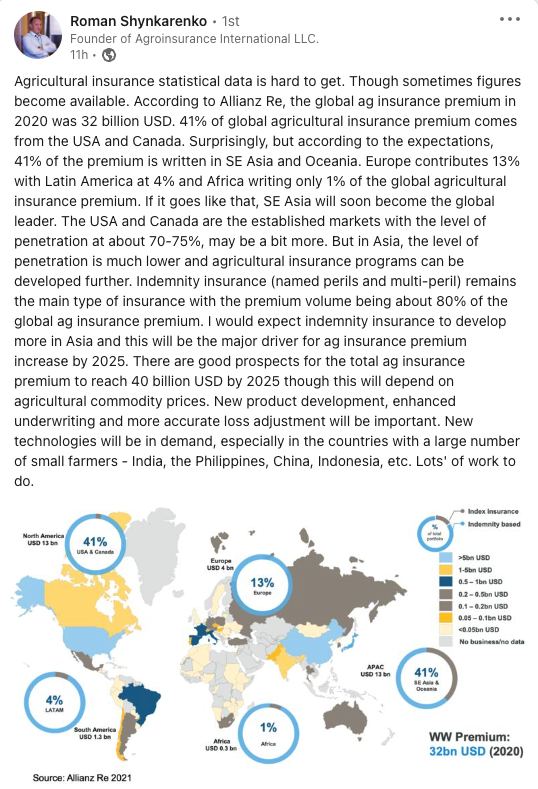

People often ask me how large is the world wide agriculture insurance market. U.S., Canada, China, and India have large government subsidized programs and provide reports on premiums. However, the reports do not contain privately sold products and premiums. These are mostly hail and top-up programs that complement the government subsidized crop and livestock insurance programs.
Roman Shynkarenko provided the post below on Linkedin for the agriculture insurance market in 2020 according to Allianz (32bn world wide in 2020).

David Gregori wrote in comments:
APAC is bigger… Count usd 4 bn for Indian and usd 15 bn for China at least. That is usd 20 bn for APAC at least if you add up other APAC countries.
This is true. I was surprised to find earlier this year that China had surpassed U.S. in total premium. While U.S. premiums tend to rise and fall with commodity prices (since they are mostly insured on a total revenue basis rather than fixed price basis), China’s premium has been steadily rising year over year. APAC likely generates more than 50% of world wide agriculture insurance premium already.
India’s market depends on the participation of each state and large states have gone in and out of the center government sponsored PMFBY program. Hopefully as the years go by the program will stabilize and a more consistent relationship can be developed between the center and state governments with respect to the PMFBY program.
I looked up a post I wrote ten years ago (English-English) on the market and China had 14bn RMB of premium, which was around USD 2bn. It sure has grown.
Meeting the Growing Need for Agriculture Insurance
Posted 7 December 2012
Teddy Wong, Agriculture Underwriter, analyses the development of crop insurance options in Asia. This article featured in the recent Asia broker newsletter.
It’s widely recognised that the Asia-Pacific region is exposed to a broad array of natural perils. Drought, flood and typhoons are particularly worrisome for the agricultural sector, directly affecting income for local farmers as well as upstream processing industries that rely on the availability of the underlying commodities. In addition, governments are acutely aware of issues surrounding their own food security to support their nations’ growing populations and workforce migration away from the traditional rural lifestyle to manufacturing or services-based employment. The increasing consumption of meat and dairy products is further raising demand for livestock feed.
Although crop insurance programmes in the Asia-Pacific region have existed for more than 75 years, crop insurance within the region is at various stages of maturity. Each country has unique difficulties in insuring smaller-scale, rural agricultural production, requiring the infrastructure to access and educate farmers as well as providing effective claims evaluation and settlement processes.
Government-sponsored crop initiatives and the availability of historical data vary considerably from country to country. There appears to be a direct correlation in market maturity for those countries whose governments have actively sought to support the growth of the crop insurance sector, at least initially. This has benefitted farmers through greater awareness of the protection available and has attracted specialist insurance markets to enter this sector. In turn, these insurers can offer global expertise and tailored solutions that meet farmers’ needs. Insurers have also helped to instil greater risk management and planning awareness.
New Zealand and Australia offer private market solutions for some crop, livestock and forestry risks. The governments of China, India, Japan, Republic of Korea, Thailand and the Philippines, among others, support crop insurance programmes through premium subsidies and the creation of public-private partnerships.
As evidence of the appetite for increased agricultural support, crop insurance premiums in China have accelerated following the introduction of premium subsidies in 2007. From RMB700 million in 2005, agriculture insurance premium volume is estimated to have grown to more than RMB14 billion in the last year, the second largest in the world. Crop insurance in the region has primarily been indemnity-based, but weather-based index insurance has played a key role in India, and experimental and ongoing pilot programmes have been established in countries such as Thailand and Vietnam.
The growth in crop insurance has also benefited from World Trade Organization rules, which allows for income insurance and income safety net programs that are ‘decoupled’ from production decisions vis-à-vis direct payments, price supports, or trade restrictions.
Although the market for crop insurance has grown quickly due to increased premium subsidies, new programmes and the realities of world agricultural trade regimes, the market is far from mature. Currently, coverage is limited to the cost of production for much of the region. Coverage levels can only increase as policies are made available to match the increasing productivity and value of agricultural outputs. In China, where rates are at times set at the provincial level, we expect to see rates further rationalised based on localised risks.
We expect the global trend towards weather-based index insurance and revenue insurance to continue as well. The former addresses the unique challenges of servicing current small-scale farms, while the latter is a natural development when small farms merge into larger commercial entities.
Agricultural insurance cannot replace sound risk management nor prevent the loss of production from natural disasters. However, when disasters do strike, it can soften the financial blow to producers of edible crops, livestock feed and raw materials. Keeping producers solvent and prosperous – whether they are rural farm households or large commercial entities – bolsters long-term stability in the supply and price of these basic necessities. It also creates the necessary conditions for economic, political, and social stability in the region as a whole.
Catlin Asia has participated in the growing market for crop insurance by providing reinsurance support and technical expertise to many of the region’s crop insurers. Whether the risks are weather, catastrophe, market-related, environmental or biological, we are poised to grow with the market with a global team of crop underwriters. Our global market perspective allows us to offer the capacity to price individual risks as a part of a worldwide book of agriculture business, which reduces the risk charge, while at the same time provides a tailored service from our regional offices in Singapore, Hong Kong, and Shanghai.